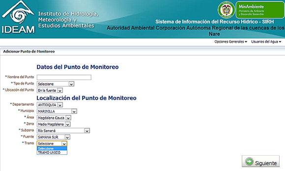
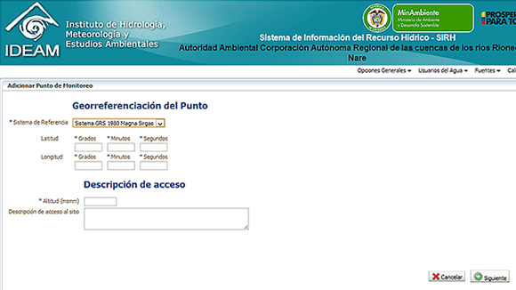

Usted tiene la posibilidad de registrar puntos:
A través de este asistente se le solicitará la siguiente información:
I) Identificador del punto: donde se indica nombre y tipo de punto.
II) Ubicación del punto: deberá ingresar el Departamento y municipio, así como su ubicación con respecto a la Zonificación hidrográfica nacional. Y pot último la fuente hidrica y tramo en el que se encuentra el punto.

Posteriormente deberá ingresar las coordenadas geográficas, altitud en m.s.n.m.y la descripción de acceso al sitio, cuyo propósito es apoyar la validación de la georreferenciación y facilitar a futuro al profesional que realiza las labores del campo visitas posteriores al sito (ej. Del Punto de Control de la Policía Vial, 360m antes del primer túnel de la vía Villavicencio - Bogotá, se toma el carreteable a mano derecha y 650 m aprox. adelante se encuentra la Planta de Tratamiento de Agua Potable de "Fuentes Altas". A mano derecha de la PTAP de Fuentes Altas, a unos 50m, se encuentra el camino la Esmeralda, desde este punto hacia el occidente se guía por un sendero peatonal hasta llegar a la Bocatoma Cñ. ).

Cuando termine de ingresar los datos, de clic en el botón "Siguiente". El sistema le presentará un mensaje indicando el éxito de la operación.